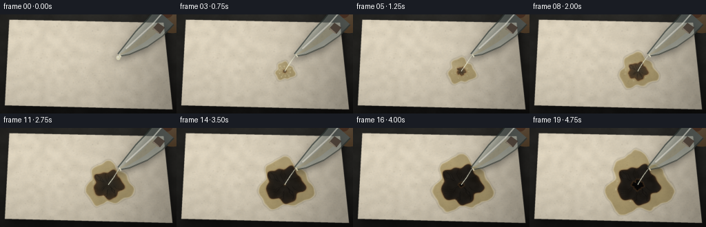
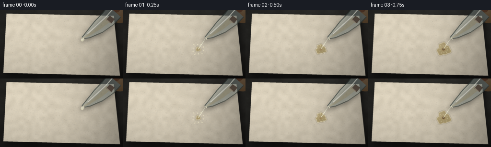
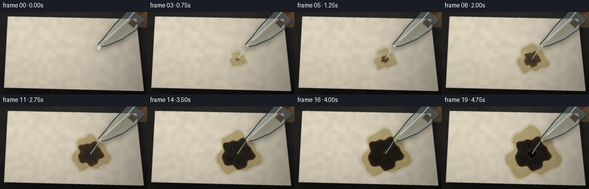
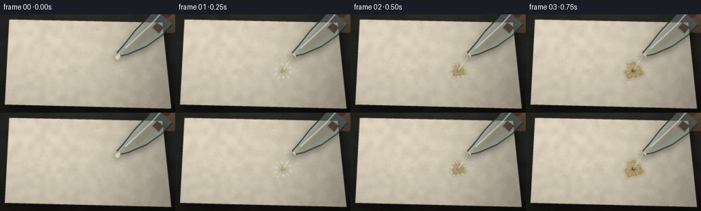

CODING AGENTS AS PIXEL WORLD MODELS
traex/DeepSeek-V4.1-Flash · phygen_153
点击播放 · 原生 RGB 像素
逐轮保存的候选
回放视频、检查图与代码变化。
每份候选均可单独播放。实际图片检查记录在下方工具轨迹中。
候选 01播放与检查图
点击播放 · 原生 RGB 像素


展开代码变化
--- 上一保存版本
+++ 本次保存版本
@@ -0,0 +1,478 @@
+from pathlib import Path
+import math
+
+import cv2
+import numpy as np
+from PIL import Image, ImageDraw
+
+import artifact_io
+
+
+W, H = 256, 144
+SS = 4
+SW, SH = W * SS, H * SS
+FRAMES = 20
+FPS = 4.0
+CASE_DIR = Path(__file__).resolve().parent
+
+
+def smoothstep(edge0, edge1, values):
+ t = np.clip((values - edge0) / np.maximum(edge1 - edge0, 1e-6), 0.0, 1.0)
+ return t * t * (3.0 - 2.0 * t)
+
+
+def srgb_mix(a, b, amount):
+ amount = np.asarray(amount, dtype=np.float32)
+ if amount.ndim == 2:
+ amount = amount[..., None]
+ return a * (1.0 - amount) + b * amount
+
+
+def resize_float(array, shape, interpolation=cv2.INTER_CUBIC):
+ return cv2.resize(array.astype(np.float32), (shape[1], shape[0]), interpolation=interpolation)
+
+
+def make_smooth_noise(rng, rows, cols, shape, sigma=0.0):
+ noise = rng.random((rows, cols), dtype=np.float32)
+ noise = resize_float(noise, shape)
+ if sigma > 0:
+ noise = cv2.GaussianBlur(noise, (0, 0), sigma)
+ lo, hi = float(noise.min()), float(noise.max())
+ return (noise - lo) / max(hi - lo, 1e-6)
+
+
+def polygon_mask(points, blur=0.0):
+ image = Image.new("L", (SW, SH), 0)
+ draw = ImageDraw.Draw(image)
+ draw.polygon([(float(x * SS), float(y * SS)) for x, y in points], fill=255)
+ mask = np.asarray(image, dtype=np.float32) / 255.0
+ if blur:
+ mask = cv2.GaussianBlur(mask, (0, 0), blur * SS)
+ return mask
+
+
+def tube_polygon(points, widths):
+ points = np.asarray(points, dtype=np.float32)
+ widths = np.asarray(widths, dtype=np.float32)
+ tangents = np.empty_like(points)
+ tangents[1:-1] = points[2:] - points[:-2]
+ tangents[0] = points[1] - points[0]
+ tangents[-1] = points[-1] - points[-2]
+ tangents /= np.maximum(np.linalg.norm(tangents, axis=1, keepdims=True), 1e-6)
+ normals = np.stack((-tangents[:, 1], tangents[:, 0]), axis=1)
+ left = points + normals * widths[:, None]
+ right = points - normals * widths[:, None]
+ return np.concatenate((left, right[::-1]), axis=0)
+
+
+def render_background(rng):
+ yy, xx = np.mgrid[0:SH, 0:SW].astype(np.float32)
+ nx = xx / (SW - 1)
+ ny = yy / (SH - 1)
+
+ base = np.empty((SH, SW, 3), dtype=np.float32)
+ base[..., 0] = 38.0 - 11.0 * ny + 5.0 * nx
+ base[..., 1] = 39.0 - 12.0 * ny + 4.0 * nx
+ base[..., 2] = 38.0 - 12.0 * ny + 3.0 * nx
+
+ coarse = make_smooth_noise(rng, 12, 21, (SH, SW), sigma=2.0 * SS) - 0.5
+ medium = make_smooth_noise(rng, 55, 95, (SH, SW), sigma=0.65 * SS) - 0.5
+ fine = rng.normal(0.0, 1.0, (SH, SW)).astype(np.float32)
+ fine = cv2.GaussianBlur(fine, (0, 0), 0.55 * SS)
+ base += (coarse * 8.0 + medium * 3.0 + fine * 1.4)[..., None]
+
+ glow = np.exp(-(((nx - 0.24) / 0.62) ** 2 + ((ny - 0.15) / 0.68) ** 2))
+ base += glow[..., None] * np.array([8.0, 7.0, 5.0], dtype=np.float32)
+ vignette = 1.0 - 0.28 * (((nx - 0.5) * 1.35) ** 2 + ((ny - 0.5) * 1.2) ** 2)
+ return np.clip(base * np.clip(vignette, 0.6, 1.0)[..., None], 0, 255)
+
+
+def render_paper(rng):
+ yy, xx = np.mgrid[0:SH, 0:SW].astype(np.float32)
+ nx = xx / (SW - 1)
+ ny = yy / (SH - 1)
+
+ low = make_smooth_noise(rng, 18, 31, (SH, SW), sigma=1.5 * SS) - 0.5
+ mid = make_smooth_noise(rng, 95, 170, (SH, SW), sigma=0.35 * SS) - 0.5
+ fine = rng.normal(0.0, 1.0, (SH, SW)).astype(np.float32)
+ fine = cv2.GaussianBlur(fine, (0, 0), 0.38 * SS)
+
+ light = 1.04 - 0.17 * nx - 0.13 * ny
+ paper = np.empty((SH, SW, 3), dtype=np.float32)
+ paper[..., 0] = 230.0 * light
+ paper[..., 1] = 222.0 * light
+ paper[..., 2] = 202.0 * light
+ paper += (low * 15.0 + mid * 5.0 + fine * 2.3)[..., None]
+ paper += np.stack((mid * 2.0, mid * 0.3, -mid * 2.2), axis=2)
+
+ overlay = Image.new("RGBA", (SW, SH), (0, 0, 0, 0))
+ draw = ImageDraw.Draw(overlay)
+ for _ in range(1050):
+ x = rng.uniform(-10, W + 10) * SS
+ y = rng.uniform(-10, H + 10) * SS
+ length = rng.uniform(2.5, 24.0) * SS
+ angle = rng.normal(-0.08, 0.18)
+ dx, dy = math.cos(angle) * length, math.sin(angle) * length
+ bright = bool(rng.random() < 0.58)
+ if bright:
+ color = (255, 251, 231, int(rng.integers(7, 19)))
+ else:
+ color = (100, 91, 72, int(rng.integers(5, 14)))
+ draw.line((x, y, x + dx, y + dy), fill=color, width=max(1, int(rng.integers(1, 3))))
+
+ for _ in range(460):
+ x = rng.uniform(0, SW)
+ y = rng.uniform(0, SH)
+ radius = rng.uniform(0.35, 1.4) * SS
+ alpha = int(rng.integers(6, 18))
+ draw.ellipse((x - radius, y - radius, x + radius, y + radius), fill=(92, 83, 67, alpha))
+
+ fiber = np.asarray(overlay, dtype=np.float32) / 255.0
+ fiber_rgb = fiber[..., :3] * 255.0
+ paper = srgb_mix(paper, fiber_rgb, fiber[..., 3:4])
+
+ warm_falloff = np.clip(1.0 - 0.10 * smoothstep(0.55, 1.0, nx), 0.88, 1.0)
+ paper *= warm_falloff[..., None]
+ return np.clip(paper, 0, 255)
+
+
+def composite_scene(background, paper, paper_mask):
+ scene = background.copy()
+ shadow = cv2.GaussianBlur(np.roll(paper_mask, (7 * SS, 5 * SS), axis=(0, 1)), (0, 0), 7.0 * SS)
+ scene = srgb_mix(scene, np.zeros_like(scene), shadow[..., None] * 0.57)
+ scene = srgb_mix(scene, paper, paper_mask[..., None])
+
+ edge = np.abs(cv2.Laplacian(paper_mask, cv2.CV_32F))
+ edge = cv2.GaussianBlur(edge, (0, 0), 0.45 * SS)
+ scene = srgb_mix(scene, np.array([112, 104, 90], dtype=np.float32), edge[..., None] * 0.24)
+ return scene
+
+
+def draw_pipette(scene, frame):
+ # The glass tube and amber pipette bulb enter from the upper-right corner.
+ axis = [(239.0, 3.0), (225.0, 19.0), (205.0, 36.0), (184.0, 52.0), (172.0, 59.0)]
+ widths = [17.5, 16.5, 13.8, 7.2, 2.0]
+ outline = tube_polygon(axis, widths)
+
+ shadow_poly = outline + np.array([-4.0, 7.0], dtype=np.float32)
+ shadow = Image.new("L", (SW, SH), 0)
+ sd = ImageDraw.Draw(shadow)
+ sd.polygon([(float(x * SS), float(y * SS)) for x, y in shadow_poly], fill=255)
+ shadow = cv2.GaussianBlur(np.asarray(shadow, dtype=np.float32) / 255.0, (0, 0), 4.8 * SS)
+ scene = srgb_mix(scene, np.zeros_like(scene), shadow[..., None] * 0.34)
+
+ overlay = Image.new("RGBA", (SW, SH), (0, 0, 0, 0))
+ draw = ImageDraw.Draw(overlay)
+
+ # Bulb, partly cropped by the frame.
+ bx, by = 250.0 * SS, 1.0 * SS
+ for step in range(12, 0, -1):
+ t = step / 12.0
+ rx = (26.0 * t + 1.0) * SS
+ ry = (25.0 * t + 1.0) * SS
+ shade = int(63 + 22 * (1.0 - t))
+ draw.ellipse((bx - rx, by - ry, bx + rx, by + ry), fill=(shade + 20, shade, max(12, shade - 22), 230))
+ draw.ellipse((234 * SS, -13 * SS, 251 * SS, 5 * SS), fill=(170, 91, 49, 82))
+ draw.ellipse((239 * SS, -10 * SS, 247 * SS, -1 * SS), fill=(235, 171, 112, 62))
+
+ # Glass barrel.
+ draw.polygon([(float(x * SS), float(y * SS)) for x, y in outline], fill=(178, 195, 189, 88))
+ draw.line([(float(x * SS), float(y * SS)) for x, y in outline[:5]], fill=(50, 61, 58, 178), width=2 * SS)
+ draw.line([(float(x * SS), float(y * SS)) for x, y in outline[5:]], fill=(65, 72, 67, 168), width=2 * SS)
+
+ left = outline[:5]
+ right = outline[5:][::-1]
+ highlight = [tuple((0.68 * l + 0.32 * r) for l, r in zip(left[i], right[i])) for i in range(5)]
+ draw.line([(float(x * SS), float(y * SS)) for x, y in highlight[:-1]], fill=(244, 249, 239, 170), width=2 * SS)
+ draw.line([(float(x * SS), float(y * SS)) for x, y in highlight[1:-1]], fill=(255, 255, 247, 115), width=1 * SS)
+
+ # A pale liquid core makes the pipette read as an acid dropper.
+ inner_axis = [(226.0, 20.0), (207.0, 37.0), (186.0, 52.0), (173.0, 59.0)]
+ inner = tube_polygon(inner_axis, [5.8, 4.2, 2.2, 0.65])
+ draw.polygon([(float(x * SS), float(y * SS)) for x, y in inner], fill=(232, 235, 177, 45))
+ draw.line([(173.0 * SS, 58.2 * SS), (175.5 * SS, 62.0 * SS)], fill=(247, 247, 220, 150), width=2 * SS)
+
+ # Rubber collar at the bulb junction.
+ collar = np.array([(229.0, 12.0), (239.0, 19.0), (232.0, 28.0), (221.0, 21.0)])
+ draw.polygon([(float(x * SS), float(y * SS)) for x, y in collar], fill=(70, 58, 50, 210))
+ draw.line([(222 * SS, 20 * SS), (230 * SS, 27 * SS)], fill=(168, 143, 115, 75), width=2 * SS)
+
+ overlay = np.asarray(overlay, dtype=np.float32) / 255.0
+ scene = srgb_mix(scene, overlay[..., :3] * 255.0, overlay[..., 3:4])
+
+ # A droplet hangs at the tip before the stream establishes.
+ if frame == 0:
+ drop = Image.new("RGBA", (SW, SH), (0, 0, 0, 0))
+ dd = ImageDraw.Draw(drop)
+ dd.ellipse((168.5 * SS, 59.5 * SS, 174.5 * SS, 66.0 * SS), fill=(245, 246, 211, 145))
+ dd.ellipse((169.8 * SS, 60.5 * SS, 172.8 * SS, 63.0 * SS), fill=(255, 255, 245, 150))
+ drop = np.asarray(drop, dtype=np.float32) / 255.0
+ scene = srgb_mix(scene, drop[..., :3] * 255.0, drop[..., 3:4])
+ return scene
+
+
+def draw_stream(scene, frame, contact):
+ if frame < 1:
+ return scene
+ tx, ty = 172.0, 60.0
+ cx, cy = contact
+ wobble = 0.65 * math.sin(frame * 1.28) + 0.22 * math.sin(frame * 2.91)
+
+ glow = Image.new("L", (SW, SH), 0)
+ core = Image.new("RGBA", (SW, SH), (0, 0, 0, 0))
+ gd = ImageDraw.Draw(glow)
+ cd = ImageDraw.Draw(core)
+ samples = 22
+ glow_points = []
+ core_points = []
+ for i in range(samples + 1):
+ t = i / samples
+ x = tx + (cx - tx) * t + math.sin(math.pi * t) * wobble
+ y = ty + (cy - ty) * t
+ glow_points.append((x * SS, y * SS))
+ core_points.append((x * SS, y * SS))
+
+ gd.line(glow_points, fill=115, width=max(2, int(2.8 * SS)))
+ glow = cv2.GaussianBlur(np.asarray(glow, dtype=np.float32) / 255.0, (0, 0), 1.7 * SS)
+ scene = srgb_mix(scene, np.array([245, 247, 220], dtype=np.float32), glow[..., None] * 0.16)
+
+ cd.line(core_points, fill=(226, 232, 203, 186), width=max(2, int(1.25 * SS)))
+ cd.line(core_points, fill=(250, 251, 234, 198), width=max(1, int(0.55 * SS)))
+ pulse_points = core_points[3:-3]
+ for i, point in enumerate(pulse_points):
+ if (i + frame) % 4 == 0:
+ r = 0.55 * SS
+ cd.ellipse((point[0] - r, point[1] - r, point[0] + r, point[1] + r), fill=(255, 255, 246, 125))
+ core = np.asarray(core, dtype=np.float32) / 255.0
+ scene = srgb_mix(scene, core[..., :3] * 255.0, core[..., 3:4])
+
+ # Wet splash spokes and tiny beads at the moment of contact.
+ if frame <= 5:
+ splash = Image.new("RGBA", (SW, SH), (0, 0, 0, 0))
+ sdraw = ImageDraw.Draw(splash)
+ life = max(0.0, 1.0 - (frame - 1) / 5.0)
+ for i in range(10):
+ angle = i * (math.tau / 10.0) + 0.22
+ r0 = (2.0 + 0.4 * i % 2) * SS
+ r1 = (5.0 + 11.0 * life) * SS * (0.72 + 0.12 * math.sin(i * 2.4))
+ x0, y0 = cx * SS + math.cos(angle) * r0, cy * SS + math.sin(angle) * r0
+ x1, y1 = cx * SS + math.cos(angle) * r1, cy * SS + math.sin(angle) * r1
+ sdraw.line((x0, y0, x1, y1), fill=(240, 235, 191, int(85 * life)), width=max(1, int(0.55 * SS)))
+ rr = (0.45 + 0.75 * life) * SS
+ sdraw.ellipse((x1 - rr, y1 - rr, x1 + rr, y1 + rr), fill=(248, 244, 210, int(105 * life)))
+ splash = np.asarray(splash, dtype=np.float32) / 255.0
+ scene = srgb_mix(scene, splash[..., :3] * 255.0, splash[..., 3:4])
+ return scene
+
+
+def reaction_masks(scene, frame, contact, noise_field):
+ if frame == 0:
+ return scene, None, None
+
+ yy, xx = np.mgrid[0:SH, 0:SW].astype(np.float32)
+ cx, cy = contact[0] * SS, contact[1] * SS
+ dx = (xx - cx) / SS
+ dy = (yy - cy) / SS
+ distance = np.sqrt(dx * dx + (dy * 1.07) ** 2)
+ angle = np.arctan2(dy, dx)
+ progress = np.clip((frame - 1) / 18.0, 0.0, 1.0)
+
+ wet_radius = 4.5 + 40.5 * (progress ** 0.68)
+ wet_irregularity = (
+ 1.0
+ + 0.145 * np.sin(3.0 * angle + 0.65)
+ + 0.075 * np.sin(7.0 * angle - 0.9 + frame * 0.03)
+ + 0.12 * (noise_field - 0.5)
+ )
+ wet_edge = wet_radius * wet_irregularity
+ wet_mask = 1.0 - smoothstep(wet_edge - 1.35, wet_edge + 1.35, distance)
+ wet_mask = np.clip(wet_mask, 0.0, 1.0)
+
+ paper_before = scene.copy()
+ wet_color = paper_before * np.array([0.73, 0.69, 0.55], dtype=np.float32) + np.array([12, 9, 2], dtype=np.float32)
+ scene = srgb_mix(scene, wet_color, wet_mask[..., None] * 0.88)
+
+ # Meniscus: dark outer contact line and a narrow reflected highlight.
+ ring = np.exp(-((distance - wet_edge) / 1.25) ** 2)
+ outer_ring = np.exp(-((distance - wet_edge - 1.5) / 1.15) ** 2)
+ scene = srgb_mix(scene, np.array([81, 72, 49], dtype=np.float32), outer_ring[..., None] * 0.18)
+ scene = srgb_mix(scene, np.array([245, 237, 205], dtype=np.float32), ring[..., None] * 0.22)
+
+ # A broad, soft reflection gives the liquid a wet rather than painted look.
+ hx, hy = cx - 10.0 * SS, cy - 8.0 * SS
+ highlight = np.exp(-(((xx - hx) / (14.0 * SS)) ** 2 + ((yy - hy) / (7.0 * SS)) ** 2))
+ highlight *= wet_mask * 0.12
+ scene = srgb_mix(scene, np.array([255, 253, 235], dtype=np.float32), highlight[..., None])
+
+ # Bubbles appear inside the acid pool and vary frame to frame.
+ bubbles = Image.new("RGBA", (SW, SH), (0, 0, 0, 0))
+ bd = ImageDraw.Draw(bubbles)
+ bubble_rng = np.random.default_rng(4201)
+ for i in range(34):
+ r = math.sqrt(bubble_rng.random()) * 0.76
+ theta = bubble_rng.random() * math.tau
+ bx = cx + math.cos(theta) * r * wet_radius * SS
+ by = cy + math.sin(theta) * r * wet_radius * SS * 0.82
+ birth = int(bubble_rng.integers(2, 15))
+ size = float(bubble_rng.uniform(0.45, 1.55))
+ if frame < birth:
+ continue
+ local = math.sqrt((bx / SS - contact[0]) ** 2 + (by / SS - contact[1]) ** 2)
+ if local > wet_radius * 0.92:
+ continue
+ fade = smoothstep(birth, birth + 2.0, frame) * (0.72 + 0.28 * math.sin(frame * 2.1 + i))
+ rr = size * SS
+ bd.ellipse((bx - rr, by - rr, bx + rr, by + rr), outline=(252, 247, 218, int(110 * fade)), width=max(1, int(0.38 * SS)))
+ bd.ellipse((bx - 0.28 * rr, by - 0.35 * rr, bx + 0.18 * rr, by + 0.08 * rr), fill=(255, 255, 246, int(105 * fade)))
+ bubbles = np.asarray(bubbles, dtype=np.float32) / 255.0
+ scene = srgb_mix(scene, bubbles[..., :3] * 255.0, bubbles[..., 3:4])
+
+ # Dehydration and charring begin after the liquid has wet the fibers.
+ char_progress = smoothstep(1.5, 17.0, frame)
+ char_radius = 0.0 if frame < 2 else 1.2 + 28.0 * (char_progress ** 0.83)
+ char_irregularity = (
+ 1.0
+ + 0.11 * np.sin(5.0 * angle + 1.2)
+ + 0.055 * np.sin(9.0 * angle - 0.4)
+ + 0.09 * (noise_field - 0.5)
+ )
+ char_edge = char_radius * char_irregularity
+ char_mask = 1.0 - smoothstep(char_edge - 1.0, char_edge + 1.0, distance)
+ char_mask *= smoothstep(1.5, 3.5, frame)
+
+ if char_radius > 0.2:
+ radial = np.clip(1.0 - distance / np.maximum(char_edge, 0.1), 0.0, 1.0)
+ depth = np.clip(0.35 + 0.55 * char_progress + 0.45 * radial, 0.0, 1.0)
+ brown = np.array([94, 57, 28], dtype=np.float32)
+ black = np.array([16, 14, 13], dtype=np.float32)
+ char_color = brown[None, None, :] * (1.0 - depth[..., None]) + black[None, None, :] * depth[..., None]
+ granular = (noise_field - 0.5) * 15.0
+ char_color = np.clip(char_color + granular[..., None], 0, 255)
+ scene = srgb_mix(scene, char_color, char_mask[..., None] * (0.64 + 0.28 * char_progress))
+
+ rim = np.exp(-((distance - char_edge) / 1.65) ** 2)
+ scene = srgb_mix(scene, np.array([126, 76, 34], dtype=np.float32), rim[..., None] * 0.22)
+
+ # Fine cracks radiate through the carbonized paper.
+ cracks = Image.new("L", (SW, SH), 0)
+ cdraw = ImageDraw.Draw(cracks)
+ crack_rng = np.random.default_rng(881)
+ crack_count = 17
+ for i in range(crack_count):
+ theta = crack_rng.random() * math.tau
+ start = crack_rng.uniform(0.08, 0.42) * char_radius
+ length = crack_rng.uniform(0.38, 0.9) * char_radius
+ points = []
+ segments = 4
+ for j in range(segments + 1):
+ rr = start + length * (j / segments)
+ tt = theta + 0.11 * math.sin(j * 1.7 + i) + 0.045 * (j - 2)
+ points.append(((cx + math.cos(tt) * rr * SS), (cy + math.sin(tt) * rr * SS * 0.91)))
+ cdraw.line(points, fill=255, width=max(1, int(0.55 * SS)))
+ cracks = np.asarray(cracks, dtype=np.float32) / 255.0
+ cracks *= char_mask * (0.24 + 0.28 * char_progress)
+ scene = srgb_mix(scene, np.array([8, 7, 7], dtype=np.float32), cracks[..., None])
+
+ # The latest frames reveal a small, ragged corrosion hole.
+ hole_radius = 0.0 if frame < 14 else max(0.0, (frame - 13.5) * 1.45)
+ hole_mask = None
+ if hole_radius > 0.1:
+ hole_edge = hole_radius * (
+ 1.0 + 0.13 * np.sin(4.0 * angle + 1.1) + 0.08 * np.sin(9.0 * angle - 0.8)
+ )
+ hole_mask = 1.0 - smoothstep(hole_edge - 0.7, hole_edge + 0.7, distance)
+ scene = srgb_mix(scene, np.array([5, 5, 5], dtype=np.float32), hole_mask[..., None] * 0.97)
+ hole_rim = np.exp(-((distance - hole_edge) / 1.15) ** 2)
+ scene = srgb_mix(scene, np.array([106, 69, 36], dtype=np.float32), hole_rim[..., None] * 0.35)
+ glint = np.exp(-(((xx - (cx - hole_radius * 0.45 * SS)) / (1.2 * SS)) ** 2 + ((yy - (cy - hole_radius * 0.45 * SS)) / (0.8 * SS)) ** 2))
+ scene = srgb_mix(scene, np.array([224, 184, 112], dtype=np.float32), (glint * hole_mask * 0.26)[..., None])
+
+ return scene, wet_mask, char_mask
+
+
+def add_fumes(scene, frame, contact):
+ if frame < 4:
+ return scene
+ progress = np.clip((frame - 3) / 16.0, 0.0, 1.0)
+ canvas = Image.new("L", (SW, SH), 0)
+ draw = ImageDraw.Draw(canvas)
+ cx, cy = contact
+ for i in range(6):
+ phase = frame * 0.65 + i * 1.4
+ x = cx + 7.5 * math.sin(phase * 0.61 + i) - 4.0
+ y = cy - (11.0 + i * 7.0 + 20.0 * progress)
+ rx = (5.0 + i * 1.4 + 4.0 * progress) * SS
+ ry = (3.0 + i * 0.7 + 2.5 * progress) * SS
+ alpha = int(45 + 20 * progress)
+ draw.ellipse((x * SS - rx, y * SS - ry, x * SS + rx, y * SS + ry), fill=alpha)
+ smoke = cv2.GaussianBlur(np.asarray(canvas, dtype=np.float32) / 255.0, (0, 0), 7.0 * SS)
+ smoke *= 0.18 + 0.11 * progress
+ return srgb_mix(scene, np.array([211, 211, 201], dtype=np.float32), smoke[..., None])
+
+
+def postprocess(scene, frame, rng):
+ yy, xx = np.mgrid[0:SH, 0:SW].astype(np.float32)
+ nx = xx / (SW - 1)
+ ny = yy / (SH - 1)
+
+ # Gentle optical bloom on the brightest wet highlights.
+ luma = scene[..., 0] * 0.2126 + scene[..., 1] * 0.7152 + scene[..., 2] * 0.0722
+ bright = np.clip((luma - 218.0) / 37.0, 0.0, 1.0)
+ bloom = cv2.GaussianBlur(bright, (0, 0), 5.0 * SS)
+ scene += bloom[..., None] * np.array([13.0, 12.0, 8.0], dtype=np.float32)
+
+ vignette = 1.0 - 0.18 * (((nx - 0.5) * 1.3) ** 2 + ((ny - 0.5) * 1.1) ** 2)
+ scene *= np.clip(vignette, 0.72, 1.0)[..., None]
+
+ # Subtle warm/cool grade and a fine, deterministic sensor grain.
+ scene[..., 0] *= 1.012
+ scene[..., 2] *= 0.988
+ grain = rng.normal(0.0, 1.0, (SH, SW)).astype(np.float32)
+ grain = cv2.GaussianBlur(grain, (0, 0), 0.42 * SS)
+ scene += grain[..., None] * 1.65
+ return np.clip(scene, 0, 255)
+
+
+def render_frame(frame, paper, paper_mask, background, noise_field):
+ scene = composite_scene(background, paper, paper_mask)
+ contact = (157.0, 82.5)
+ scene, _, _ = reaction_masks(scene, frame, contact, noise_field)
+ scene = draw_stream(scene, frame, contact)
+ scene = draw_pipette(scene, frame)
+ scene = add_fumes(scene, frame, contact)
+ rng = np.random.default_rng(9300 + frame)
+ scene = postprocess(scene, frame, rng)
+ small = cv2.resize(scene, (W, H), interpolation=cv2.INTER_AREA)
+ return np.clip(np.rint(small), 0, 255).astype(np.uint8)
+
+
+def main():
+ rng = np.random.default_rng(153)
+ background = render_background(rng)
+ paper = render_paper(rng)
+ paper_points = [(13.5, 7.5), (237.0, 12.0), (250.0, 138.0), (7.0, 132.0)]
+ paper_mask = polygon_mask(paper_points, blur=0.32)
+ paper_mask = np.clip(paper_mask * 1.08, 0.0, 1.0)
+ noise_field = make_smooth_noise(rng, 64, 112, (SH, SW), sigma=2.8 * SS)
+
+ frames = [
+ render_frame(frame, paper, paper_mask, background, noise_field)
+ for frame in range(FRAMES)
+ ]
+ artifact_io.save(frames, CASE_DIR)
+
+ # The PNG/npz/html bundle is canonical; also provide a directly playable MP4.
+ writer = cv2.VideoWriter(
+ str(CASE_DIR / "video.mp4"),
+ cv2.VideoWriter_fourcc(*"mp4v"),
+ FPS,
+ (W, H),
+ )
+ if writer.isOpened():
+ for frame in frames:
+ writer.write(cv2.cvtColor(frame, cv2.COLOR_RGB2BGR))
+ writer.release()
+
+
+if __name__ == "__main__":
+ main()
候选 02播放与检查图
点击播放 · 原生 RGB 像素


展开代码变化
--- 上一保存版本
+++ 本次保存版本
@@ -151,7 +151,7 @@
def draw_pipette(scene, frame):
# The glass tube and amber pipette bulb enter from the upper-right corner.
axis = [(239.0, 3.0), (225.0, 19.0), (205.0, 36.0), (184.0, 52.0), (172.0, 59.0)]
- widths = [17.5, 16.5, 13.8, 7.2, 2.0]
+ widths = [17.5, 16.5, 13.8, 7.2, 2.7]
outline = tube_polygon(axis, widths)
shadow_poly = outline + np.array([-4.0, 7.0], dtype=np.float32)
@@ -177,8 +177,8 @@
# Glass barrel.
draw.polygon([(float(x * SS), float(y * SS)) for x, y in outline], fill=(178, 195, 189, 88))
- draw.line([(float(x * SS), float(y * SS)) for x, y in outline[:5]], fill=(50, 61, 58, 178), width=2 * SS)
- draw.line([(float(x * SS), float(y * SS)) for x, y in outline[5:]], fill=(65, 72, 67, 168), width=2 * SS)
+ draw.line([(float(x * SS), float(y * SS)) for x, y in outline[:5]], fill=(38, 48, 46, 205), width=2 * SS)
+ draw.line([(float(x * SS), float(y * SS)) for x, y in outline[5:]], fill=(47, 56, 52, 198), width=2 * SS)
left = outline[:5]
right = outline[5:][::-1]
@@ -188,7 +188,7 @@
# A pale liquid core makes the pipette read as an acid dropper.
inner_axis = [(226.0, 20.0), (207.0, 37.0), (186.0, 52.0), (173.0, 59.0)]
- inner = tube_polygon(inner_axis, [5.8, 4.2, 2.2, 0.65])
+ inner = tube_polygon(inner_axis, [5.8, 4.2, 2.2, 0.85])
draw.polygon([(float(x * SS), float(y * SS)) for x, y in inner], fill=(232, 235, 177, 45))
draw.line([(173.0 * SS, 58.2 * SS), (175.5 * SS, 62.0 * SS)], fill=(247, 247, 220, 150), width=2 * SS)
@@ -214,7 +214,7 @@
def draw_stream(scene, frame, contact):
if frame < 1:
return scene
- tx, ty = 172.0, 60.0
+ tx, ty = 172.0, 60.5
cx, cy = contact
wobble = 0.65 * math.sin(frame * 1.28) + 0.22 * math.sin(frame * 2.91)
@@ -234,10 +234,12 @@
gd.line(glow_points, fill=115, width=max(2, int(2.8 * SS)))
glow = cv2.GaussianBlur(np.asarray(glow, dtype=np.float32) / 255.0, (0, 0), 1.7 * SS)
- scene = srgb_mix(scene, np.array([245, 247, 220], dtype=np.float32), glow[..., None] * 0.16)
-
- cd.line(core_points, fill=(226, 232, 203, 186), width=max(2, int(1.25 * SS)))
- cd.line(core_points, fill=(250, 251, 234, 198), width=max(1, int(0.55 * SS)))
+ scene = srgb_mix(scene, np.array([245, 247, 220], dtype=np.float32), glow[..., None] * 0.18)
+
+ # Dark optical edge keeps the fine stream legible over pale paper.
+ cd.line(core_points, fill=(81, 88, 74, 94), width=max(2, int(2.05 * SS)))
+ cd.line(core_points, fill=(226, 232, 203, 194), width=max(2, int(1.18 * SS)))
+ cd.line(core_points, fill=(250, 251, 234, 208), width=max(1, int(0.48 * SS)))
pulse_points = core_points[3:-3]
for i, point in enumerate(pulse_points):
if (i + frame) % 4 == 0:
可观测工具轨迹
实际执行的命令与返回图片。
命令 1exit 0
/bin/bash -c "pwd && rg --files -g 'prompt.txt' -g 'GENERATION_RULES.md' -g 'task_spec.json' -g '"'!node_modules'"'"
命令 2exit 0
/bin/bash -c 'git status --short && find . -maxdepth 2 -type f | sort | head -100'
命令 3exit 0
/bin/bash -c 'cat prompt.txt'
命令 4exit 0
/bin/bash -c 'cat GENERATION_RULES.md'
命令 5exit 0
/bin/bash -c 'cat task_spec.json'
命令 6exit 0
/bin/bash -c "sed -n '1,240p' artifact_io.py"
命令 7exit 0
/bin/bash -c "which ffmpeg ffprobe python3 blender node || true; python3 - <<'PY' mods=['numpy','PIL','matplotlib','cv2','imageio','torch','cairo','moderngl'] for m in mods: try: mod=__import__(m); print(m, getattr(mod,'__version__','ok')) except Exception as e: print(m, 'NO') PY"
命令 8exit 1
/bin/bash -c 'MPLCONFIGDIR=.tmp/mpl python3 generate.py'
命令 9exit 1
/bin/bash -c 'MPLCONFIGDIR=.tmp/mpl python3 generate.py'
命令 10exit 0
/bin/bash -c 'MPLCONFIGDIR=.tmp/mpl python3 generate.py'
命令 11exit 0
/bin/bash -c "python3 - <<'PY'
from PIL import Image
im=Image.open('inspection.png'); im.resize((im.width*2, im.height*2), Image.Resampling.NEAREST).save('.tmp/inspection_2x.png')
im=Image.open('transition_check.png'); im.resize((im.width*2, im.height*2), Image.Resampling.NEAREST).save('.tmp/transition_2x.png')
print(Image.open('frames/19.png').getbbox())
PY
ls -lh frames/00.png frames/19.png inspection.png transition_check.png pixels.npz index.html video.mp4"命令 12exit 0
/bin/bash -c "which chafa viu img2txt jp2 || true; python3 - <<'PY'
from PIL import Image
import numpy as np
for i in [0,1,4,9,14,19]:
a=np.asarray(Image.open(f'frames/{i:02d}.png')).astype(float)
print(i, 'mean', np.round(a.mean((0,1)),1), 'std', round(float(a.std()),1), 'pct_dark', round(float((a.mean(2)<35).mean()),3), 'pct_bright', round(float((a.mean(2)>200).mean()),3))
PY"命令 13exit 0
/bin/bash -c "python3 - <<'PY'
from PIL import Image
# Build a large review sheet using all 20 frames, not the standard 8-frame contact sheet.
frames=[Image.open(f'frames/{i:02d}.png') for i in range(20)]
out=Image.new('RGB',(256*5,144*4),(25,28,35))
for i,im in enumerate(frames):
out.paste(im,((i%5)*256,(i//5)*144))
out.resize((2560,1152),Image.Resampling.NEAREST).save('.tmp/all_frames.png')
PY"命令 14exit 0
/bin/bash -c "python3 - <<'PY'
from PIL import Image
import numpy as np
# Quantify meaningful temporal change and inspect the reaction region.
for i in range(1,20):
a=np.asarray(Image.open(f'frames/{i-1:02d}.png')).astype(np.int16)
b=np.asarray(Image.open(f'frames/{i:02d}.png')).astype(np.int16)
d=np.abs(a-b)
print(f'{i:02d}: mae={d.mean():.2f} changed={((d.max(2)>8).mean()*100):.1f}%')
PY"命令 15exit 0
/bin/bash -c "python3 - <<'PY'
from PIL import Image,ImageOps
import numpy as np
chars=' .:-=+*#%@'
for i in [0,5,10,15,19]:
im=Image.open(f'frames/{i:02d}.png').convert('L').resize((80,36),Image.Resampling.BILINEAR)
a=np.asarray(im)
print('\\nFRAME',i)
for row in a:
print(''.join(chars[min(len(chars)-1,int(v)*len(chars)//256)] for v in row))
PY"命令 16exit 0
/bin/bash -c "python3 - <<'PY'
from PIL import Image
import numpy as np
chars=' .,:;irsXA253hMHGS#9B&@'
for i in [0,1,10,19]:
im=Image.open(f'frames/{i:02d}.png').crop((140,0,256,100)).resize((58,50),Image.Resampling.BILINEAR)
a=np.asarray(im.convert('L'))
print('\\nFRAME',i,'top-right')
for row in a:
print(''.join(chars[min(len(chars)-1,int(v)*len(chars)//256)] for v in row))
PY"命令 17exit 0
/bin/bash -c "python3 - <<'PY'
from PIL import Image
import numpy as np
chars=' .,:;irsXA253hMHGS#9B&@'
for i in [0,1,8,14,19]:
im=Image.open(f'frames/{i:02d}.png').crop((112,35,205,124)).resize((70,42),Image.Resampling.BILINEAR)
a=np.asarray(im.convert('L'))
print('\\nFRAME',i,'reaction crop')
for row in a:
print(''.join(chars[min(len(chars)-1,int(v)*len(chars)//256)] for v in row))
PY"命令 18exit 0
/bin/bash -c "which ffmpeg || true; python3 - <<'PY'
import cv2, numpy as np
from PIL import Image
frames=[cv2.imread(f'frames/{i:02d}.png',cv2.IMREAD_COLOR) for i in range(20)]
# Verify all frames have identical dimensions and non-degenerate color channels.
for i,a in enumerate(frames):
print(i, a.shape, tuple(np.round(a.mean((0,1)),1)), tuple(np.round(a.std((0,1)),1)))
PY"命令 19exit 0
/bin/bash -c 'MPLCONFIGDIR=.tmp/mpl python3 generate.py'
命令 20exit 0
/bin/bash -c "python3 - <<'PY'
from PIL import Image
import numpy as np
import json, os
spec=json.load(open('task_spec.json'))
files=sorted(__import__('glob').glob('frames/*.png'))
assert len(files)==spec['frames'], (len(files),spec['frames'])
for f in files:
im=Image.open(f); assert im.size==(spec['width'],spec['height']) and im.mode=='RGB'
z=np.load('pixels.npz'); assert z['pixels'].shape==(144,256,20)
for i in [0,1,9,19]:
a=np.asarray(Image.open(f'frames/{i:02d}.png')).astype(np.int16)
print(i, 'mean', a.mean((0,1)).round(1).tolist(), 'std', round(float(a.std()),2))
# Check that the stream region changes at onset and later frames remain non-identical.
for i in range(1,20):
a=np.asarray(Image.open(f'frames/{i-1:02d}.png')).astype(np.int16)
b=np.asarray(Image.open(f'frames/{i:02d}.png')).astype(np.int16)
assert np.abs(a-b).max()>20
print('validated',len(files),'frames',Image.open(files[0]).size,'mp4_bytes',os.path.getsize('video.mp4'))
PY
ffprobe -v error -select_streams v:0 -show_entries stream=codec_name,width,height,r_frame_rate,nb_frames,duration -of default=noprint_wrappers=1 video.mp4 2>/dev/null || true"命令 21exit 0
/bin/bash -c "command -v ffprobe || true; command -v ffmpeg || true; python3 - <<'PY'
import cv2
cap=cv2.VideoCapture('video.mp4')
print('opened',cap.isOpened(),'count',int(cap.get(cv2.CAP_PROP_FRAME_COUNT)),'size',int(cap.get(cv2.CAP_PROP_FRAME_WIDTH)),int(cap.get(cv2.CAP_PROP_FRAME_HEIGHT)),'fps',cap.get(cv2.CAP_PROP_FPS))
ok=True; n=0
while True:
ret, frame=cap.read()
if not ret: break
n+=1
print('decoded',n)
PY"命令 22exit 0
/bin/bash -c "python3 -m py_compile generate.py && python3 - <<'PY'
from pathlib import Path
import json
required=['generate.py','task_spec.json','prompt.txt','GENERATION_RULES.md','pixels.npz','index.html','inspection.png','transition_check.png','video.mp4']
missing=[p for p in required if not (Path('.')/p).exists()]
assert not missing, missing
assert 'artifact_io.save(frames, CASE_DIR)' in Path('generate.py').read_text()
print('contract artifacts present:', ', '.join(required))
PY
git status --short -- generate.py frames pixels.npz index.html inspection.png transition_check.png video.mp4"保存候选 2 份；完成命令 22 次；可验证图片返回 0 张。原始 API 响应与完整日志保留在本地。